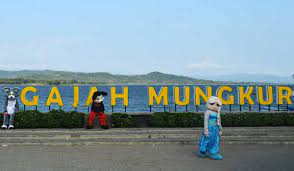
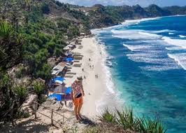

Wisata Watu Cenik adalah lokasi wisata di area perbukitan Kota Wonogiri. Tepatnya berada di Desa Sendang, Kecamatan Wonogiri, Kabupaten wonogiri, Jawa Tengah. Waktu tempuh untuk sampai ke Watu Cenik dari Kota Wonogiri kurang lebih sekitar 15 menit. Watu Cenik menyajikan pemandangan Waduk Gajah Mungkur yang tampak membentang luas dilihat dari ketinggian. Selain itu, pemandangan makin terlihat asri dengan adanya kawasan perbukitan Wonogiri yang masih dipenuhi hijau pepohonan.

Obyek Wisata (OW) Waduk Gajah Mungkur juga masih berlokasi di sekitaran area Wonogiri Kota. Lokasi tepatnya berada di Desa Sendang, Wonogiri. Kompleks wisata OW Gajah Mungkur menawarkan beberapa aktivitas berwisata yang bisa dijajal oleh pengunjung. Di antaranya, pengunjung bisa berjalan-jalan di tepian waduk, naik perahu, menjajal berbagai arena permainan, atau melihat berbagai binatang yang ada di kebun binatangnya. Selain itu, pengunjung bisa juga berenang ataupun mencoba bermain wahana air di waterboomnya.

Waduk Pidekso merupakan waduk baru di Wonogiri yang diresmikan Presiden Joko Widodo (Jokowi) pada Selasa (28/12/2021). Bagi masyarakat yang ingin berkunjung ke Waduk Pidekso, waduk ini belum resmi dibuka. Namun jika hari libur tiba, area di sekitar waduk sudah ramai dengan pedagang makanan dan pengunjung yang menikmati pemandangan waduk dari bahu jalan. Waduk Pidekso berlokasi di Desa Pidekso, Kecamatan Giriwoyo, Kabupaten Wonogiri.

Jika ingin berenang bersama keluarga di Wonogiri, maka pemudik bisa menjajal berenang di Kolam Renang Soko Langit. Kolam renang ini berada di Desa Conto, Bulukerto, Wonogiri. Beberapa kelebihan Kolam Renang Soko Langit ini adalah keindahan pemandangan pegunungan yang ditawarkan. Selain itu, kolam renang berada di kawasan pedesaan, sehingga hawanya masih terasa sejuk dan menyegarkan. Jika berkunjung ke Soko Langit, pengunjung juga bisa sekalian mengunjungi Goa Resi yang lokasinya tak jauh dari kolam renang.

Air Terjun Muncar berlokasi di Desa Bubakan, Girimarto, Wonogiri. Untuk datang kemari diperlukan waktu sekitar 50 menit dari Kota Wonogiri. Pemandangan yang masih asri dan air terjun yang masih alami adalah kelebihan yang ditawarkan dari lokasi wisata ini. Pastikan mengenakan pakaian yang nyaman saat datang kemari agar mudah beraktivitas, apalagi bagi Anda yang ingin menyusur hutan untuk mengunjungi air terjunnya. Tapi jika tidak ingin jalan jauh, maka pengunjung bisa bersantai-santai di tepian kolam yang berisi banyak ikan hias sembari kulineran.

Pantai Nampu adalah salah satu pantai yang ada di daerah Wonogiri. Lokasi Pantai Nampu tepatnya berada di Desa Gunturharjo, Paranggupito, Wonogiri. Menuju Pantai Nampu, perjalanan dari Kota Wonogiri sampai ke pantai diperlukan waktu sekitar 2 jam. Pantai Nampu memiliki bibir pantai dengan pasir putih yang luas, cocok untuk menghabiskan waktu bersama keluarga. Pantai ini juga terhitung lebih sepi jika dibandingkan dengan pantai di daerah lain di sekitarnya seperti Gunungkidul maupun Pacitan.